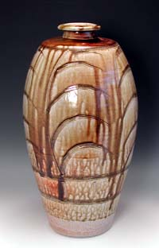
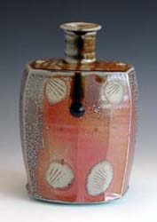
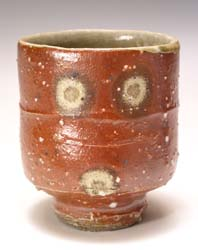

| Phil Rogers
British studio potter
Phil
Rogers is a British studio potter and author of several
pottery books.
Rogers studied at Newport College of Art from 1969-70, at Swansea
College of Art from 1970-72 and at Swansea College of Education,
University of Wales, from 1972-73. He taught at two Comprehensive
Schools in Cambridgeshire from 1974-77 and briefly at Staffordhire
University in 1986.
Rogers established his first workshop in Wales in 1978, where he
made wheel-thrown, oxidized stoneware. In 1981 Rogers turned his
attention to reduction-fired stoneware, making vessels inspired
by Korean and European Medieval ceramics and since 1985 he has also
been making salt-glazed wares.


In 1985 he was elected Fellow of the Craft Potters Association
of Great Britain. He became a council member of the CPA in 1986,
in 1990 Vice Chair and was Chair from 1991-95. In 1994 he was appointed
to the Craft Board, Arts Council of Wales. In 1999 he became a member
of the IAC.
Rogers is also known as the author of Ash
Glazes (1992), Throwing
Pots (1995) and Salt
Glazing (2002).
More Artists of the Week
More Articles
|